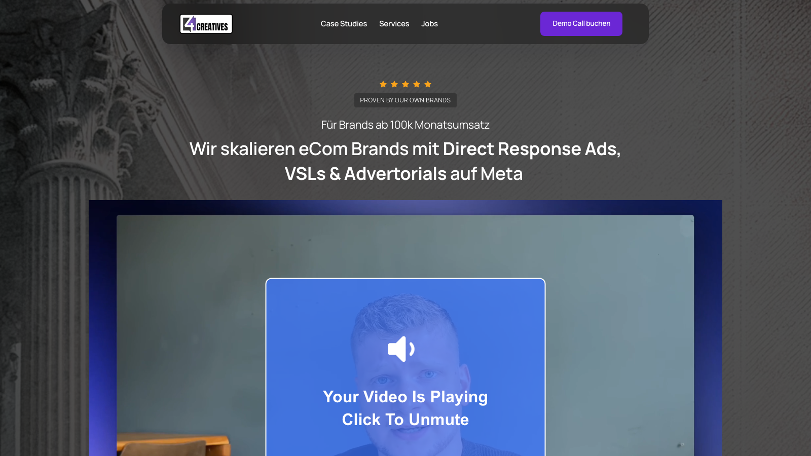

Henner runs 4 Creatives, a direct-response creative agency scaling ecom brands with ads, VSLs and advertorials. Hand-building every post between client pods killed his cadence for two months straight. The engine took the job off him.

Henner leads client pods all day. Every post he shipped was hand-built: sourcing the idea, translating it into his register, editing out the tells. Around five hours a week of manual work, and the first thing dropped whenever client delivery got loud.
Two months of silence on the feed of a founder whose agency sells attention. That was the brief.
A content brain indexes his call library, his past posts and his brand voice, and gets sharper with every call added.
Drafts queue on a review board. He reads, taps approve, and the post schedules itself.
Posting daily builds the audience. The lead magnet engine converts it: assets written and designed for the DTC brand founders his agency serves, shipped under his brand, capturing the leads his pods actually want.
Every asset is aimed at ecom founders, the one audience his agency sells to. No generic downloads.
Written, designed and published under 4 Creatives. We are not on the page anywhere.
Every capture lands in his list, and every launch gets its own promotional post, drafted like the rest.
The sourcing, the translating, the editing, the scheduling: all of it off his plate. What is left of the job is reading a draft that already sounds like him and approving it.
If your cadence dies every time client work gets loud, the fix is a system that does not care how loud it gets.